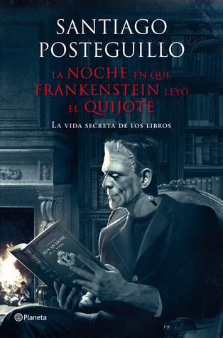

La noche en que Frankenstein leyó el Quijote
Reseña por Jorge I. Zuluaga

Ver reseña en GoodReads (necesita cuenta)
De todo mi gusto y creo que lo será de cualquier de los amigos de GoodReads a los que les guste la literatura y las buenas anécdotas sobre algunos de sus escritores favoritos.
Y lo mejor: contadas por quién a "fuerza" de buenos libros se ha venido convirtiendo en uno de mis autores favoritos, Santiago Posteguillo. Que gran capacidad la de Santiago para convertir en una pequeña narración una historia verídica, para hacer más creíble la historia inventando dialogos entre personajes reales que te hubiera encantado conocer.
El libro se lee de una sentada de modo que no hay razón para conseguirlo ya y leerlo apenas lo tengas en la mano.
En pocas palabras (aunque odio escribir sobre lo que ya esta en la descripción del libro en la contraportada o en la presentación del libro en GoodReads) "La noche en que Frankenstein leyó el Quijote" es una colección de historias sobre libros, autores, editores y lectores de todos los tiempos, desde el Egipto de Alejandro Magno, pasando por la Roma Imperial hasta el día, hace no muchos años, en el que una ama de casa británica, aficionada a la escritura, se convirtió en multimillonaria esencialmente por culpa del amor de un padre hacia su hija lectora (¡no más! podría arruinar uno de los bonitos relatos que cierra este librito).
Lo más bonito de los relatos compilado en este libro, es el esfuerzo que hace Posteguillo, con su instinto de escritor de sagas históricas llenas de buena acción, de escribir los relatos sin revelar desde el principio los personajes o libros de los que esta hablando. Esto hace que como lector sientas el reto de adivinar, resistiendo la tentación de dirigir tu mirada más abajo en la página o adelantarte un poco, de quién o qué versa la historia. El resultado, como es obvio, es muy divertido.
De entre las historias me encantaron "La prisión", (naturalmente) "La noche en que Frankenstein leyó el Quijote", "Charles Dickens y la piratería informática", "La Gestapo y la literatura", "El último vuelo" (¡tremenda historia!), "La novela perdida" y, obviamente, "El libro electrónico o el pergamino del siglo xxi" (obviamente porque esta ambientada en uno de los mejores libros de Posteguillo, "Los asesinos del Emperador").
Ahora ¡a por "La sangre de los libros"! (que se supone es la "segunda" parte de esta serie)